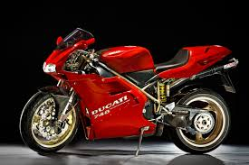
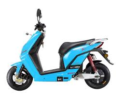
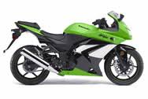
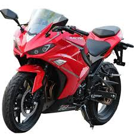

MOTOS



Una motocicleta, comúnmente conocida en español con la abreviatura moto, es un vehículo de dos ruedas, impulsado por un motor de combustión interna a gasolina que acciona la rueda trasera
